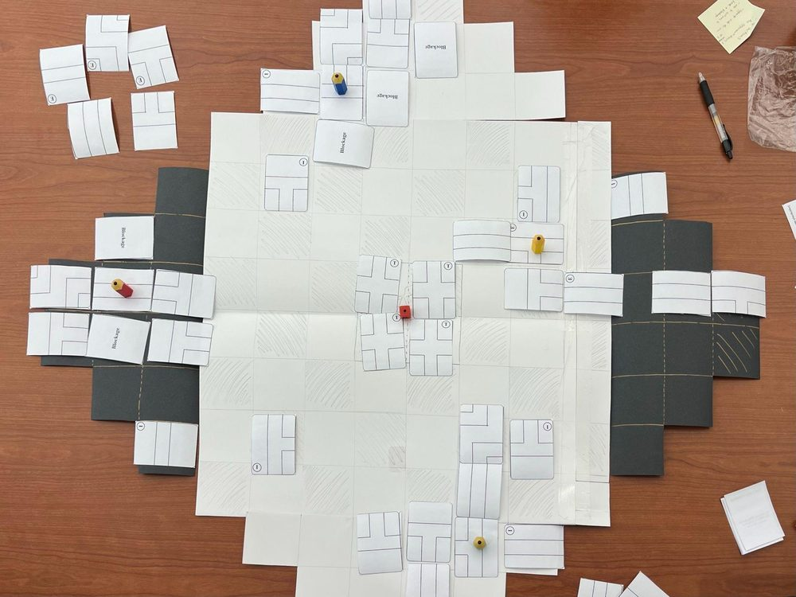
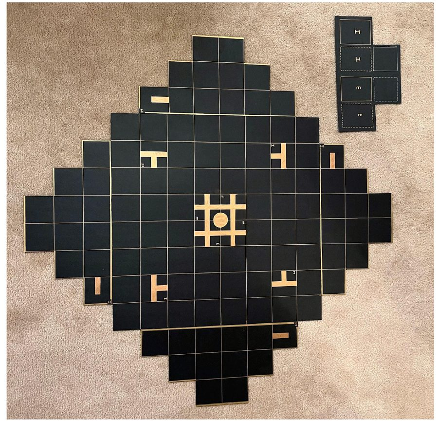

I design software that people have to rely on. By day I lead UX research and interface design for government applications at China Telecom Global, taking each one from stakeholder interviews to prototypes developers can build from, then through testing. Before that, I studied UX and research at the University of Toronto, and I still build my own products.
5government apps designed in parallel
218test cases written for one release
590+user comments analyzed for my thesis
3working languages: EN · 粵 · 普
Case studies
03 projects
Case 01 · Client work · Anonymized
A regulatory monitoring dashboard for a government department
A Hong Kong government department needed one place to monitor a regulated industry: how operators were performing, where compliance issues were appearing, and how activity was changing over time. The people using it are analysts and officers who make decisions from these numbers, so every view had to be readable at a glance and correct in every detail.
Because the work is confidential, this case study describes the process and decisions only. The schematic below is redrawn and contains no real data, labels or screens.
My role
UX research, information architecture, interface design, HTML prototype, test planning; acting project lead for front-end delivery
Team
Client stakeholders, developers, three testing groups
Scope
Four dashboard views: overview, compliance, operators, activity statistics
Tools
Figma · HTML / CSS / JavaScript prototype · Excel
Process
UnderstandInterviewed client stakeholders about the decisions each view must support.
StructureGrouped the questions into four views and defined what each shows first.
DesignWireframes and visual design in Figma, built on shared components.
PrototypeA working HTML prototype handed to developers as the build reference.
TestWrote the acceptance tests and ran them with three testing groups.
Konrad 想看你“怎么想”。请补 2–3 句：最初客户主要想解决什么问题？用户第一眼最需要看到什么？——例如“官员每天早上要先确认哪些运营者出现异常”。
Iterating as the requirements moved
The client’s needs changed several times during the project. Instead of treating each change as a patch, I went back to the question each view was meant to answer and reworked its hierarchy: what sits in the summary row, which comparison earns the main chart, and what moves into a detail table. Keeping the prototype in HTML meant each round could be reviewed by the client in a browser and handed to developers without re-specifying it.
Redrawn schematic, not the real interface. The hierarchy I applied to every view: filters at the top, summary figures first, one main comparison, a breakdown beside it, and detail only when asked for.
Making sure it worked
I planned and wrote the user acceptance tests myself: 218 structured test cases (98 pages) across the four views for one release, covering every filter, button, export and calculation, with similar items merged so testers were not repeating themselves. I ran testing with three groups on a daily rhythm, testing in the morning and reviewing findings in the afternoon, and turned the results into prioritized fixes and reports for the client.
Outcome
The dashboards went through several rounds of client review and drew strong commendation from the client.
Difficulty Design Vault: turning research into a product people use
Advice on game difficulty for small teams is mostly opinion, and the careful analyses students write for coursework are graded once and then disappear. I built the Vault to turn both into evidence-based guidance: a bilingual web knowledge base where every recommendation shows how many independent sources stand behind it.
It grew out of my master’s thesis (8 developer interviews, 590+ player comments, 35 games) and is now used in game-design course teaching.
My role
All of it, solo: research framework, information architecture, interface design, consent model and front-end build
Users
Developers, researchers and instructors, contributors
The home page asks one question first, “Who are you?”, and gives each audience its own path.
Key design decisions
Start from the visitor, not the contentThree very different audiences arrive with different goals. Rather than one menu for everyone, the home page splits into three entry cards, each with the two or three actions that audience actually needs.
A recommendation tool with no black boxThe Advisor asks a few questions about a game’s structure, feel and team size, then scores every mechanism against the answers and the published evidence. No AI and no account, so users can see why they got a result.
Publish only what the evidence supportsGuidance appears only when enough independent sources agree, and each published claim links back to the statements behind it. Trust is part of the interface, not a footnote.
Consent separate from gradingStudents contribute coursework, so the submission flow keeps consent to publish completely separate from anything that affects a grade.
Bilingual from the startEnglish and Chinese side by side, switchable from every page.
Information architecture: one question on the home page routes each audience to the sections it needs, and every contribution flows back out as guidance only once the evidence is strong enough.
Live and bilingual, used in game-design course teaching. It is early days: the library currently holds demo mechanisms and a handful of coded submissions, and every published output shows how many sources support it.
Case 03 · Team project · User testing
Dive Down the Dungeon Deep: designing through playtesting
A treasure-hunt board game for two to four players, built with a five-person team at the University of Toronto. I was the project manager and core mechanic designer, and I ran and analyzed both rounds of user testing.
Two rounds of playtesting with 36 players led us to reshape the action economy and the turn pacing, taking the game from a rough paper prototype to a finished print-and-play board.
My role
Project manager, core mechanic design, user testing
Testing
2 rounds · 36 players
Year
2023

Paper prototype used in the first round of testing.

Finished print-and-play board after two rounds.
How I work
Process & tools
I start from the decision the user has to make, design the structure before the surface, prototype in code early so people can react to something real, and test until the details are right. Coordinating delivery across five projects has taught me to explain design choices in plain language to clients, developers and testers alike.
ResearchStakeholder and user interviews, usability and acceptance testing, qualitative analysis, synthesis
DesignInformation architecture, user flows, wireframes, Figma components and prototyping, data visualization
BuildHTML, CSS, JavaScript; React and Flutter prototyping; AI-assisted prototyping with Claude, Codex and Cursor
Contact
Email first
Email is the best way to reach me. Canadian, open to roles in Toronto and Vancouver.